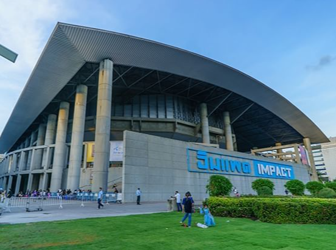

2026年4月28日から5月3日まで、世界の建材業界の注目はタイ・バンコクのIMPACTムアントンターニーに集まります。第39回タイ国際建築・建材博覧会（ARCHITECT'26）が開幕を控えており、これはASEAN地域で最大かつ最も影響力のある建築技術見本市であるだけでなく、中国のファスナーメーカーが東南アジア市場に参入するための「黄金の発射台」でもあります。
1. 博覧会概要：ASEAN No.1の建材イベント
タイ建築家協会（ASA）とTTF Exhibition Companyが共催するARCHITECT'26は、38回の成功を収めており、「ASEAN No.1の建材博覧会」として知られています。今年の規模は新記録を達成：展示面積75,000平方メートル以上、45カ国から1,000以上の著名ブランドが集結、ASEAN地域全域から建築家、エンジニア、購買担当者、開発業者を含む85,000人以上の専門来場者を集める見込みです。
- 開催日 2026年4月28日 – 5月3日（計6日間）
- 会場 タイ・バンコク IMPACTムアントンターニー チャレンジャーホール
- 主催者 ASA（タイ建築家協会）、TTF International Exhibition Company
- 展示範囲 建築材料、建設用ハードウェア、ドア・窓・カーテンウォール、ファスナー・標準部品、衛生陶器、石材機械、および全産業チェーン
博覧会期間中は、ASAフォーラム、新製品発表会、建材デモンストレーション、専門ワークショップ、業界交流レセプションなどの特別イベントも開催されます。初めて「材料・色彩パビリオン」が設けられ、デザイナー向けの創造的プラットフォームを提供します。
2. ファスナーのグローバル展開：なぜタイなのか？
タイのファスナー市場は急速な成長を遂げています。市場調査データによると、タイの工業用ファスナー市場規模は約16億米ドルで、建設と自動車が2つのコア推進力です。中国のファスナーメーカーにとって、タイ市場の戦略的価値は以下の4つの側面に表れています：
1. インフラ政策の利点が集中放出 タイ政府は東部経済回廊（EEC）第二期プロジェクトを推進しており、77のインフラプロジェクトをカバーし、総投資額は3,400億バーツに上ります。同時に、中泰高速鉄道第二期は2025年に着工予定です。これらの巨大プロジェクトは、高強度ボルト、構造用接合部品などの建設用ファスナーに膨大な需要を生み出します。
2. タイ4.0政策が産業高度化を推進 タイ政府が提唱する「タイ4.0」高付加価値経済モデルは、製造業の自動化・知能化への転換を促進しています。基礎的な工業部品であるファスナーは、この過程で需要が上昇し続けています。
3. 中国製ファスナーの競争優位性
- 貿易規模が拡大継続 2024年、タイは中国から相当額のファスナーを輸入しており、中国はタイのファスナー最大の供給源国の一つとなっています。
- 関税優遇措置の実施 RCEP発効に伴い、ドア・窓用プロファイルやハードウェア部品を含む65%の品目で既に関税がゼロとなり、輸出コストが大幅に削減されました。
- 明確なコストパフォーマンス優位性 中国製ファスナー製品は、タイ国内製や日本・韓国製に比べて20%-30%価格が低く、建設用ハードウェア分野で支配的な地位を占めています。
- ビザ手続きの簡素化 中泰間の恒久的相互ビザ免除政策（2024年実施）により、出張コストが大幅に削減され、企業の渡航費用が約30%削減されました。
4. 建設用ハードウェアの輸入依存度が高い タイの建設用ハードウェアの約50%は輸入に依存しています。成熟した生産プロセス、安定した品質、競争力のある価格を備えた中国製品は、タイ市場で優先的なサプライヤーとなっています。
31. 博覧会で：ファスナーメーカー専用の舞台
建設用ハードウェアは本博覧会のコアセグメント ファスナー、標準部品、バルブ、ドア・窓用ハードウェアアクセサリーなどのカテゴリーには専用展示エリアが設けられています。これは、出展企業がASEAN地域の建築家、工事請負業者、開発業者、販売代理店と直接対面し、的確な顧客獲得を実現できることを意味します。
プロモーションのための専門メディアサポート 公式サポートメディアパートナーとして、Fasteners & Auto Parts (FAP) 誌は現地で英語版調達ガイドを配布し、12の主要国際見本市をカバーして海外の質の高いバイヤーに確実にリーチします。
同時開催イベントによる深いネットワーキング 博覧会期間中には、「中泰ファスナー・建設応用交流・視察ツアー」（4月26-30日）も開催され、中国企業がタイの業界専門家と直接交流し、市場を深く視察するための橋渡しを行います。
市場回復の明確な兆候 タイ中央銀行は、政府の景気刺激策により、2026年第1四半期にタイ経済が改善し、ファスナー需要の成長を牽引する可能性があると予想しています。
異業種連携による多様な需要創出 建設以外にも、タイの自動車、電子機器、家電などの産業もファスナーに強い需要があります。出展企業は複数の下流顧客セグメントを同時に開拓できます。
機会の窓を捉える タイのインフラプロジェクトが本格化し、製造業が高度化する中、2026年は中国のファスナーメーカーがタイ市場に地歩を築くための重要な機会の窓となります。
40. 出展ガイドとアドバイス
- 博覧会公式ウェブサイトまたは事前登録プラットフォームを通じて、事前に来場者事前登録を完了し、現地での待ち時間を節約してください。
- 英語の製品資料とサンプルを準備してください — タイのバイヤーは製品品質と技術仕様を非常に重視します。
- 同時開催の「中泰ファスナー・建設応用交流会」に注目してください。これは現地市場を深く理解する絶好の機会です。
- ビザ免除政策を活用してビジネススケジュールを事前に調整し、博覧会前後に1-2日を市場調査のために確保することを検討してください。
2026年タイ国際建築・建材博覧会は、単なる製品展示の場ではなく、中国のファスナーメーカーが東南アジアに進出し、グローバルサプライチェーンに統合するための戦略的な軸点です。この1兆ドル規模の市場の玄関口で、先に行動する者が主導権を握るでしょう。
製品詳細または技術サポートについては、当社の または チームまでお問い合わせください。
連絡先情報WhatsApp: +8615926201780
メール: info@wtscrews.com
ウェブサイト: wtscrews.com
ブランド: WT Fasteners